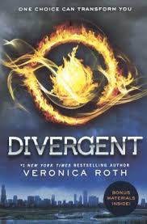

Reading
Reading is something I thoroughly enjoy. We often hear about the many benefits of reading, such as:
- Improving our vocabulary
- Increasing knowledge
- Enhancing writing skills
- Boosting creativity
- Relieving stress
- And more!
I use reading as a way to relieve stress and escape from reality. My interest in reading began in 5th grade when my teacher gave me the first Divergent novel to read. I finished the whole book in one weekend. Since then, I've been drawn to dystopian and science fiction books because they transport me to new worlds, temporarily disconnecting me from reality. When I read, I can almost imagine myself in the book, experiencing its events.
While dystopian and sci-fi books remain favorites, thrillers have become my go-to genre. Thriller books offer suspense and always leave me wanting to read more. Some of my top picks are: The President's Daughter, The Silent Patient, and The Poet. These books have some of the best plot twists I've encountered. Authors like James Patterson, Stephen King, Michael Connelley, and Alex Michaelides are among my favorites. They consistently deliver suspenseful and captivating stories that leave me questioning every detail and character.
Despite my busy schedule, I always make time to read, especially at night before bed. Sometimes, I get so engrossed in a book that I end up staying up later than I should. I'm open to book recommendations, even outside my usual genres. If you have any suggestions, I'd love to hear them!
Reading has become a vital part of my life, not only for entertainment but also for personal growth. It's amazing how a good book can transport you to different worlds, introduce you to new ideas, and help you understand yourself and others better. Whether it's fiction or nonfiction, reading has the power to broaden our horizons and enrich our lives in countless ways.